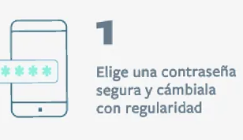
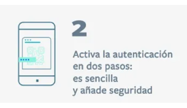
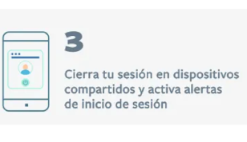
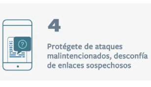
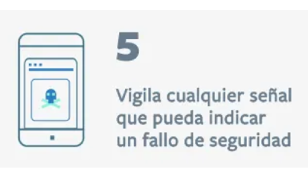
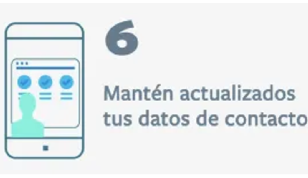

a
Seguridad en redes sociales
La gran mayoría de las personas que usan Internet, también utilizan las redes sociales. Ya sea para mantenerse en comunicación con familia y amigos, para entretenimiento, pago y compra de artículos y servicios, e incluso, trabajo; es difícil encontrar a alguien que no tenga al menos una cuenta en alguna de estas plataformas.
Por ello y debido a que los ciberdelincuentes aprovechan cualquier medio y tiempo en el que estés en línea para intentar conseguir y hacer mal uso de tu información, te aconsejamos lo siguiente:
Evita aceptar que aplicaciones externas tengan acceso a tus redes sociales.
Niega permisos y vínculos a cualquier sitio externo que no sea de tu utilidad o confianza.

Utiliza la verificación de dos pasos
La mayoría de las redes sociales cuentan con dos o más métodos de autenticación de identidad; habilita al menos dos.


Cierra siempre tu sesión
Especialmente si accedes a tus redes sociales desde un dispositivo o equipo de uso o acceso público.

Desconfía de enlaces externos o spam
Algunos anunciantes te llevan con engaños a su página. Antes de dar clic, sitúa tu cursor en el vínculo y lee en tu barra de estado a qué dirección te lleva. Si no te parece de confianza, no entres en el sitio.

Utiliza las restricciones de seguridad
Asegúrate de que tu perfil sea privado; que sólo tus familiares y amigos cercanos puedan verlo. También puedes personalizar cada una de tus publicaciones en redes como Facebook, para que sólo gente de tu confianza las vea.

No compartas nada que pudiera perjudicar tu integridad e imagen.
Protege cualquier información que pudiera afectar tu seguridad, como tu ubicación o datos bancarios. Toma en cuenta que nada se elimina para siempre de Internet.
